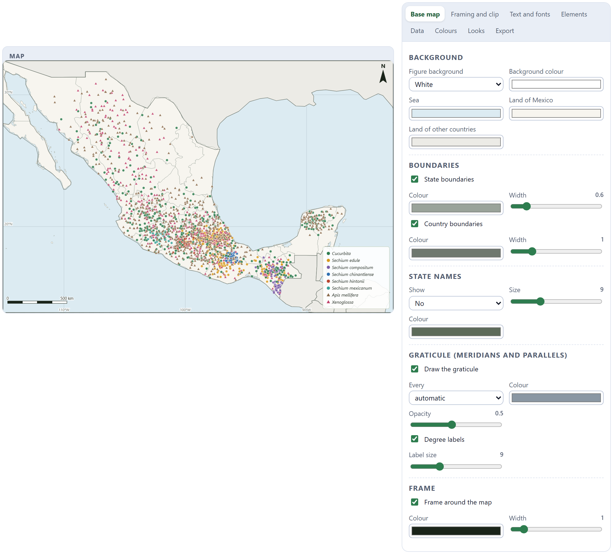
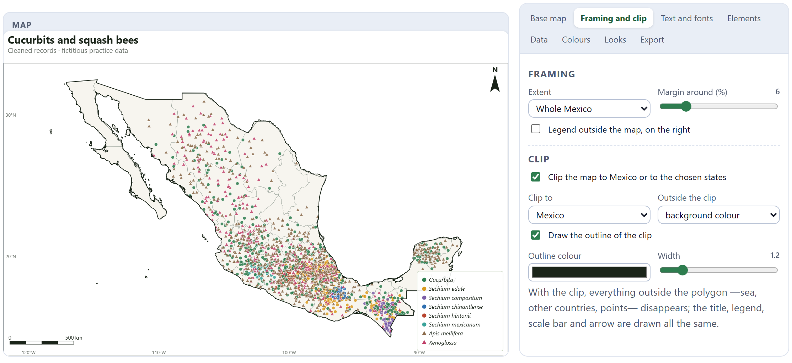
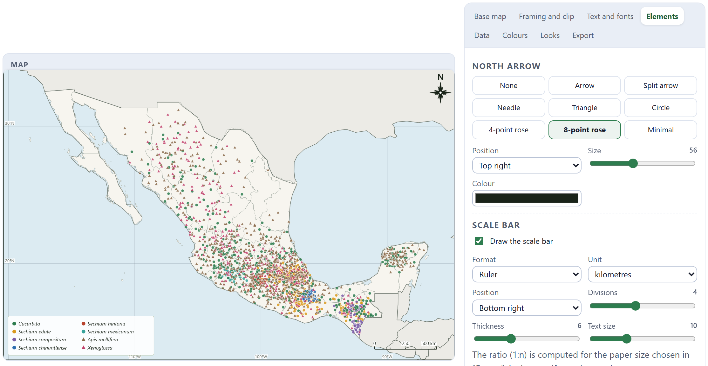
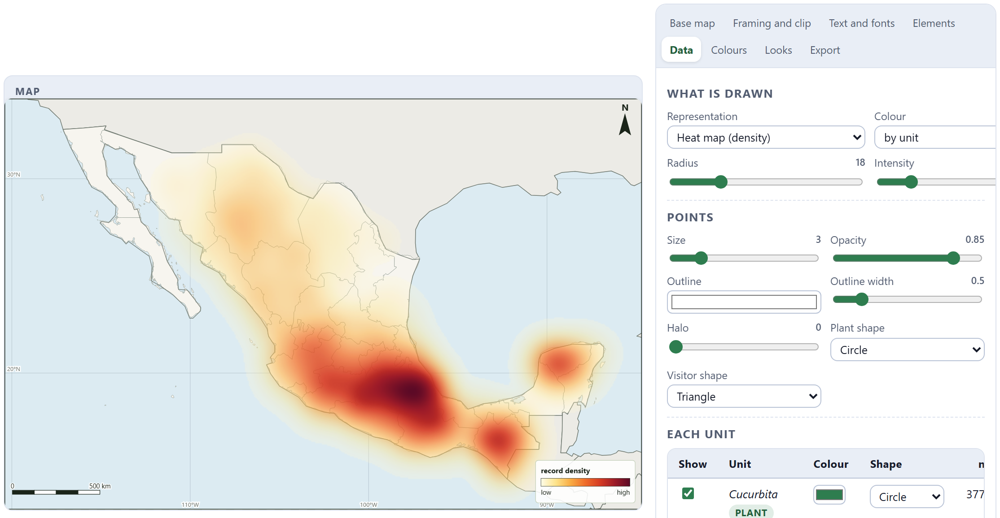
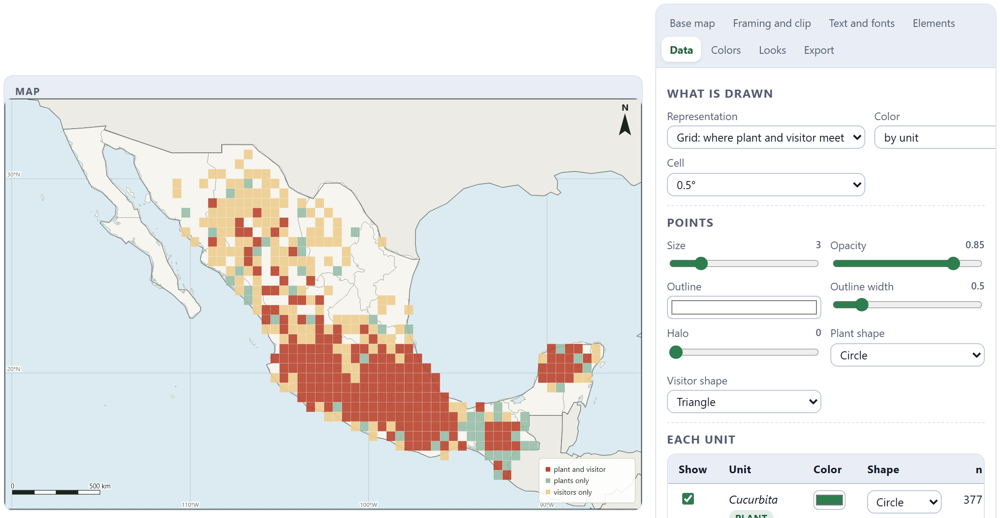
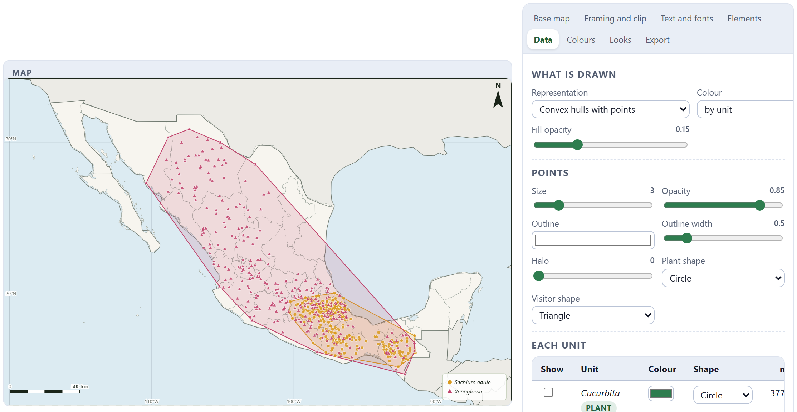
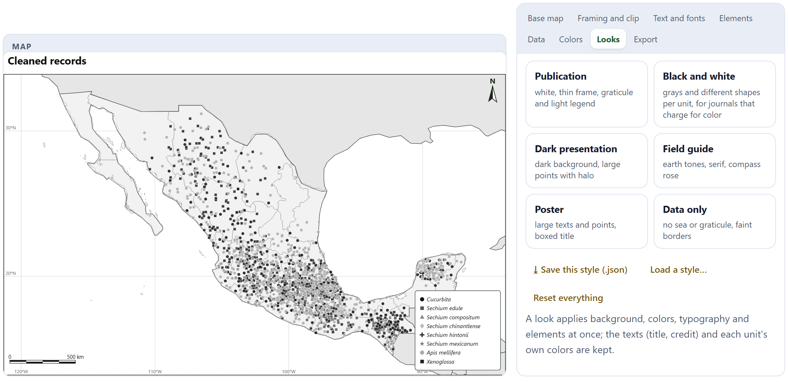
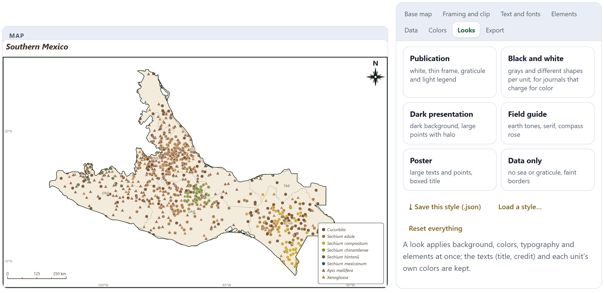
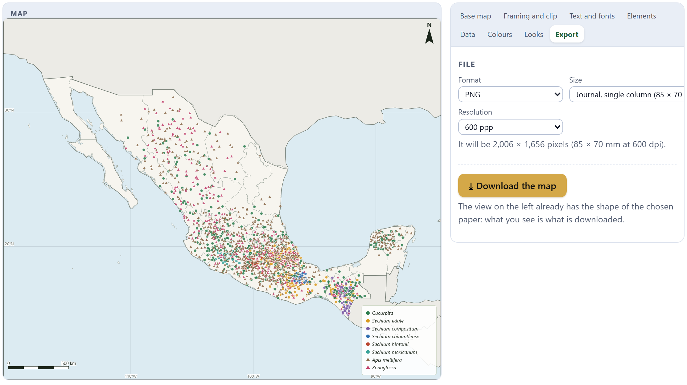
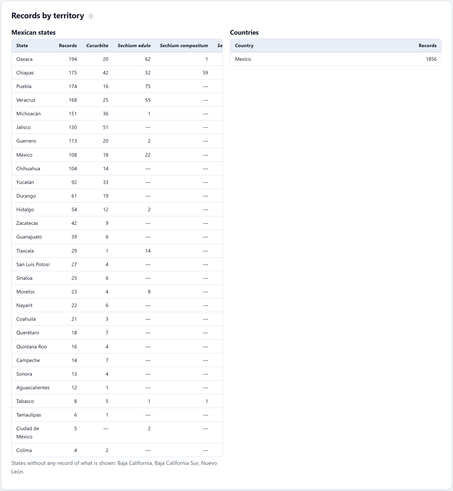

The cleaned records over the territory, with no internet connection. The map is the first quality check —a point in the sea or in the wrong country catches the eye— and the first figure of the paper. Everything is edited from a studio with eight tabs: background and boundaries, framing and clip, texts and fonts, north arrow, scale bar and legend, points, heat or grids, colors, ready-made looks and export at journal size, up to GeoTIFF.
Before measuring co-occurrences you have to see where the points are. A record in the sea, a cloud of points at the center of a state, a mountain species that shows up on the coast, a desert bee in the rainforest: all of that is seen on the map in seconds and never in a table. If something like that appears, go back to Block 3 and adjust a rule.
The same map is the first figure of the paper. That is why Block 4 is not a viewer but a complete editing studio, with a vector base map of the program’s own: the outlines of the world’s countries and of the 32 Mexican states (Natural Earth, public domain) travel with the app. No tiles are downloaded from any service, so it works without internet, it is exported without asking anyone for permission and it looks the same on any computer.

The map on the left is redrawn with every change on the right. The eight tabs group the controls; everything you choose is remembered in that browser, so the map is the same the next time, and a complete style can be saved to a file (Section 4.6).
| Tab | What is edited |
|---|---|
| Base map | Figure background, sea, land of Mexico and of other countries; state and country boundaries; state names; graticule; frame. |
| Framing and clip | The extent of the map, the margin, the legend outside the map and the clip to Mexico or to chosen states. |
| Text and fonts | Title, subtitle, source or credit, legend title, the typeface family and the sizes and styles. |
| Elements | North arrow (eight designs), scale bar (eight formats) and legend. |
| Data | What is drawn (points, heat, grids, hulls), the symbols and each unit. |
| Colors | The palette of the units, the density ramp and the color of each unit. |
| Looks | Six ready-made looks, saving and loading a style, resetting everything. |
| Export | Format, paper size and resolution, and the download. |
Base map. The figure background can be white, that of the app theme, a custom color or transparent. You choose the colors of the sea, of the land of Mexico and of the land of other countries (telling them apart helps to read a map of Mexico); whether the state and country boundaries are drawn, with their color and width; whether the state names are written —no, abbreviation or full name—, with their size and color; the graticule of meridians and parallels, how many degrees apart (automatic, 1°, 2°, 5°, 10° or 20°), its color, its opacity and its degree labels; and the frame around the map.
Framing. The extent can be fitted to the records (with a margin in percent), cover the whole of Mexico, the chosen states, the world or your own coordinates (north, south, west and east). Legend outside the map, on the right moves the legend out of the map area so that it does not cover points.

Clip. Clip the map to Mexico or to the chosen states draws only what falls inside that silhouette. Outside the clip there is the background color or nothing (transparent, useful for placing the map over another figure). Draw the outline of the clip traces the outer silhouette —not the internal borders— with the color and width you choose. When you choose chosen states in the extent or in the clip, the list of the 32 states appears so you can tick them.
Text and fonts. Four texts —title, subtitle, source or credit, legend title— and six generic typeface families (system sans, humanist sans, serif, classic serif, condensed sans and monospace), which exist on any computer and therefore look the same on the reviewer’s. You choose the text color, the size of the title (with bold, italics and alignment), of the subtitle and of the credit, and the corner of the credit. Unit names are written in italics in the legend, as scientific names require.

| Element | Options |
|---|---|
| North arrow | None, arrow, split arrow, needle, triangle, circle, 4-point rose, 8-point rose and minimal; position, size and color. |
| Scale bar | Alternating blocks, stepped (two rows), solid bar, line with ends, ruler, kilometers and miles, text only and ratio (1:n); unit (kilometers or miles), position, divisions, thickness and text size. The ratio is computed for the paper size chosen in Export and changes if the paper changes. |
| Legend | Whether to draw it, position, box (light, dark, outline only or none), text size and one to three columns. |
The Data tab decides what is drawn. Each representation answers a different question:
| Representation | What it is for |
|---|---|
| Points | The standard distribution figure: one symbol per record, with color and shape by unit or by role. |
| Heat map (density) | Where the records are concentrated, with adjustable radius and intensity. It shows sampling effort as much as abundance. |
| Grid: records per cell | How many records there are in each cell (0.1° to 2°), with the density ramp. |
| Grid: where plant and visitor meet | The cells with plant and visitor, plants only or visitors only: the visual version of the test of Block 5. |
| Convex hulls with points | The minimum area enclosing the points of each unit, and their overlap. |


In Figure 4.5 the shared cells (in rust red) are concentrated in central and southern Mexico, where more sampling was done; the visitor-only cells (light amber) dominate the north, where Xenoglossa and the honey bee are recorded without wild cucurbits. It is a visual reading; Block 5 says whether that co-occurrence is more or less than chance predicts.
The symbols. Size, opacity, outline color and width, halo (a light border that separates the points from the background) and the shape of the plants and of the visitors: circle, square, triangle, diamond, cross or star. With by role color, all the plants go in one color and all the visitors in another.

Each unit. The table of the Data tab —repeated in Colors— has one row per unit with the Show checkbox, its color, its shape and its number of records. The buttons Show all, Plants only and Visitors only change the visibility at a stroke. The territory tables of Section 4.7 and the points download follow what is shown.
Colors. Six palettes for the units —PollinationPro, Okabe–Ito (color-blind safe), Earth, Vivid, Soft and Grays— and six ramps for density —Greens, Amber, Violets, Heat, Cool and Grays—. A color changed by hand in a unit is kept when you change palette; Back to the palette colors undoes it.
A look applies the background, the colors, the typography and the elements at once; the texts (title, credit) and each unit’s own colors are kept.
| Look | What it is like | What for |
|---|---|---|
| Publication | White, thin frame, graticule and light legend. | The figure of a paper. |
| Black and white | Grays and different shapes per unit. | Journals that charge for color. |
| Dark presentation | Dark background, large points with halo. | Slides. |
| Field guide | Earth tones, serif, compass rose, state abbreviations. | Books, outreach posters. |
| Poster | Large texts and points, boxed title. | Conference posters. |
| Data only | No sea or graticule, faint boundaries. | Composite figures, insets. |


⤓ Save this style (.json) saves all the map options —except the data— to a file (map_style.json); Load a style… applies it to another study or on another computer. That way all the map figures of a thesis come out alike. Reset everything goes back to the starting values.

| Option | Values |
|---|---|
| Format | PNG, JPEG, WebP, SVG (vector, editable), TIFF and GeoTIFF (georeferenced). |
| Size | Screen (960 × 620 px), A4 landscape and portrait, letter landscape, journal single column (85 × 70 mm), 1.5 columns (120 × 90 mm) and double column (175 × 120 mm), 16:9 slide and custom (in millimeters). |
| Resolution | 150, 300, 600 or 900 dpi. Below, you can read the size in pixels that will come out. |
The GeoTIFF carries the georeferencing keys of a longitude–latitude grid on WGS 84 (EPSG 4326): in a geographic information system it falls exactly on your layers. For an exact fit over the whole image, remove the title and keep the legend inside the map; the app reminds you of this when downloading.
| If the journal asks for the final figure | then TIFF or PNG at 600 dpi at the column width it asks for (single, one and a half or double). |
| If you are going to touch up the figure in another program | then SVG: every text and every point remains editable. |
| If the figure goes into a geographic information system or onto another map | then GeoTIFF, without a title. |

The tables follow what the map shows: if units are hidden, they are recomputed. The states table gives the total and one column per unit (up to ten); the sentence below names the states without any record of what is shown. It is the first answer to “where is sampling missing?”: a state without records of a plant that should be there is a sampling gap or a real distribution limit, and it is worth knowing which before interpreting the following blocks. ⤓ Points shown (.csv), under the studio, downloads the visible points with their unit and coordinates (map_points.csv).
A map of presence records is not a distribution map: it shows where someone recorded the species, not where it lives. Gaps may be absences or lack of sampling, and concentrations may be abundance or effort. The caption of the paper’s figure should say so (“cleaned records of…, GBIF and own observations”), and Block 8 is the one that estimates the potential distribution.